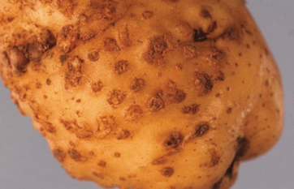
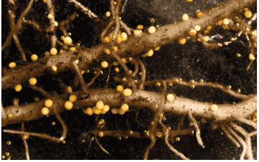
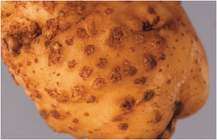
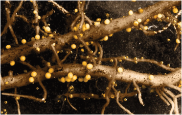

Agriculture for Secondary Schools
Symptoms of the diseases: Symptoms include mottling, mosaic patterns on
leaves, upward rolling of leaves, chlorosis (yellowing), stunted growth, leaf drop,
and reduced tuber yield.
Management of viral diseases: Use virus-free certified seed potatoes to reduce
the risk of introducing viral pathogens into the field. Control insect vectors like
aphids through integrated pest management (IPM) strategies, such as insecticides,
natural predators, and cultural practices. Rotate potatoes with non-host crops to
break the life cycle of soil-borne pathogens and vectors. Regularly clean and
disinfect tools, machinery, and storage facilities to prevent the mechanical spread
of viruses.
Nematode diseases management
Potato nematodes seriously threaten potato crops, causing significant yield losses
if not managed properly. The main types of diseases caused by nematodes are cyst
nematodes (Globodera spp.) (Figure 5.9) and root-knot nematodes (Meloidogyne
spp.). Potato cyst nematodes cause stunted growth, yellowing leaves, poor root
development, reduced yield, and form cysts on roots. Meanwhile, root-knot
nematodes cause root galls, stunted growth, wilting, and deformed tubers.
Management of the diseases: To control nematode diseases, use resistant varieties,
crop rotation, biological controls, and soil fumigation. Key preventive measures
include soil testing, using nematode-free seed potatoes, and maintaining field
hygiene. An integrated management approach is essential for effective nematode
control and minimising crop losses.
Figure 5.9 (b): Nematode cysts on potato roots
Figure 5.9 (a): Root-knot nematode disease
Source:https://www.science.org/content/article/
Source:https://veggiescout.ca.uky.edu/root-knot-
potato-farmers-conquer-devastating-worm-paper-
nematodes-potato
made-bananas
82
Student’s Book Form Two